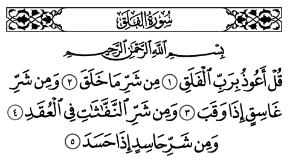

1 - En Arabe

2 - Traduction rapprochée
1. Dis : "Je cherche protection auprès du Seigneur de l'aube naissante,
2. contre le mal des êtres qu'Il a créés,
3. contre le mal de l'obscurité quand elle s'approfondit,
4. contre le mal de celles qui soufflent (les sorcières) sur les noeuds,
5. et contre le mal de l'envieux quand il envie ".